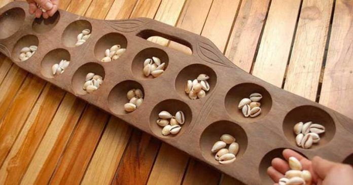

"Yang diwariskan bukan cuma permainan."
Setiap permainan membuka kesempatan untuk belajar dari orang lain, menyusun strategi, berlatih, dan menghabiskan waktu bersama. Menjaganya tetap hidup tidak harus dimulai dengan sesuatu yang besar. Kadang, cukup dengan mengajak seseorang bermain.